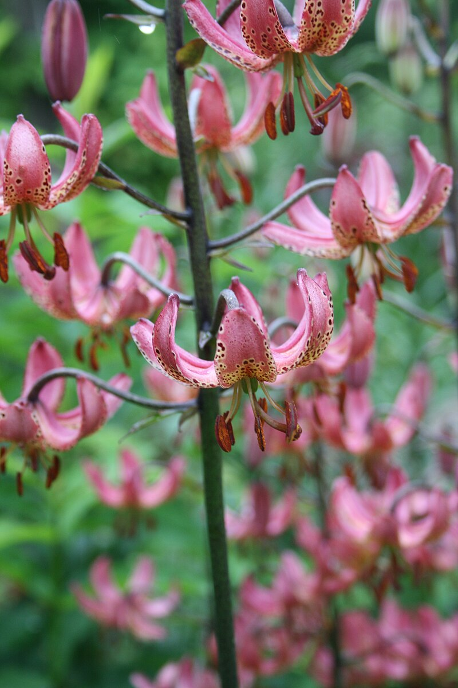

The lily is a genus of flowering plant that is important in culture and literature in much of the world. Most species are native to the temperate northern hemisphere, though their range extends into the northern subtropics. Lilies are tall perennials ranging in height from 2–6 ft (60–180 cm). They form naked or tunicless scaly underground bulbs which are their organs of perennation.
LiLyFamily: Liliaceae
Genus: Lilium
Height: 2–6 ft
Flowering season: Summer
Lilies are used as food plants by the larvae of some Lepidoptera species including the Dun-bar.

Plant lilies in a sunny location.
Provide well-drained soil.
Water them regularly but avoid waterlogging.
Mulch to keep the roots cool.